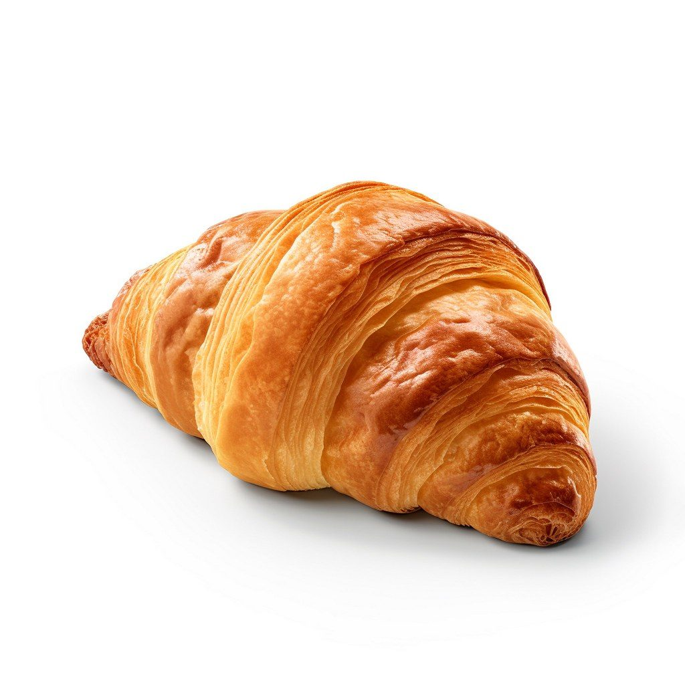

制作側の連想
スーツケースをひらくように、五つのページ
お店の名前の由来は分かりません。制作側は、荷物を運ぶ道具であるスーツケースの部位に、このサイトの五ページをなぞらえてみました。持ち手がホーム、留め金が店のこと、ジッパーがメニュー、角の保護が口コミ、車輪がアクセスです。
スーツケースの部位のモチーフは、制作側の連想です。お店の理念・由来とは無関係で、お店がそのような考えで営業しているという意味でもありません。
ふたの中身(イメージ)
ひらいたら、パンとコーヒー豆の写真。
写真はお店のものではなく、撮影地不明のフリー素材のイメージです。実際の商品や提供内容を示すものではありません。



ご案内
お店のこと(確認できたものだけ)
| 所在地 | 〒766-0023 香川県仲多度郡まんのう町吉野629-1 |
|---|---|
| 電話 | 0877-79-0778 |
| @boulangerie.vent | |
| 営業時間 | 準備中 |
| 定休日 | 準備中 |
| 駐車場 | 準備中 |